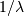
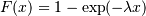
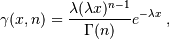
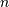

Statistics (scipy.stats)¶
Introduction¶
In this tutorial we discuss many, but certainly not all, features of scipy.stats. The intention here is to provide a user with a working knowledge of this package. We refer to the reference manual for further details.
Note: This documentation is work in progress.
Random Variables¶
There are two general distribution classes that have been implemented for encapsulating continuous random variables and discrete random variables . Over 80 continuous random variables (RVs) and 10 discrete random variables have been implemented using these classes. Besides this, new routines and distributions can easily added by the end user. (If you create one, please contribute it).
All of the statistics functions are located in the sub-package scipy.stats and a fairly complete listing of these functions can be obtained using info(stats). The list of the random variables available can also be obtained from the docstring for the stats sub-package.
In the discussion below we mostly focus on continuous RVs. Nearly all applies to discrete variables also, but we point out some differences here: Specific Points for Discrete Distributions.
Getting Help¶
First of all, all distributions are accompanied with help functions. To obtain just some basic information we can call
>>> from scipy import stats
>>> from scipy.stats import norm
>>> print norm.__doc__
To find the support, i.e., upper and lower bound of the distribution, call:
>>> print 'bounds of distribution lower: %s, upper: %s' % (norm.a,norm.b)
bounds of distribution lower: -inf, upper: inf
We can list all methods and properties of the distribution with dir(norm). As it turns out, some of the methods are private methods although they are not named as such (their name does not start with a leading underscore), for example veccdf, are only available for internal calculation.
To obtain the real main methods, we list the methods of the frozen distribution. (We explain the meaning of a frozen distribution below).
>>> rv = norm()
>>> dir(rv) #reformatted
['__class__', '__delattr__', '__dict__', '__doc__', '__getattribute__',
'__hash__', '__init__', '__module__', '__new__', '__reduce__', '__reduce_ex__',
'__repr__', '__setattr__', '__str__', '__weakref__', 'args', 'cdf', 'dist',
'entropy', 'isf', 'kwds', 'moment', 'pdf', 'pmf', 'ppf', 'rvs', 'sf', 'stats']
Finally, we can obtain the list of available distribution through introspection:
>>> import warnings
>>> warnings.simplefilter('ignore', DeprecationWarning)
>>> dist_continu = [d for d in dir(stats) if
... isinstance(getattr(stats,d), stats.rv_continuous)]
>>> dist_discrete = [d for d in dir(stats) if
... isinstance(getattr(stats,d), stats.rv_discrete)]
>>> print 'number of continuous distributions:', len(dist_continu)
number of continuous distributions: 84
>>> print 'number of discrete distributions: ', len(dist_discrete)
number of discrete distributions: 12
Common Methods¶
The main public methods for continuous RVs are:
- rvs: Random Variates
- pdf: Probability Density Function
- cdf: Cumulative Distribution Function
- sf: Survival Function (1-CDF)
- ppf: Percent Point Function (Inverse of CDF)
- isf: Inverse Survival Function (Inverse of SF)
- stats: Return mean, variance, (Fisher’s) skew, or (Fisher’s) kurtosis
- moment: non-central moments of the distribution
Let’s take a normal RV as an example.
>>> norm.cdf(0)
0.5
To compute the cdf at a number of points, we can pass a list or a numpy array.
>>> norm.cdf([-1., 0, 1])
array([ 0.15865525, 0.5 , 0.84134475])
>>> import numpy as np
>>> norm.cdf(np.array([-1., 0, 1]))
array([ 0.15865525, 0.5 , 0.84134475])
Thus, the basic methods such as pdf, cdf, and so on are vectorized with np.vectorize.
Other generally useful methods are supported too:
>>> norm.mean(), norm.std(), norm.var()
(0.0, 1.0, 1.0)
>>> norm.stats(moments = "mv")
(array(0.0), array(1.0))
To find the median of a distribution we can use the percent point function ppf, which is the inverse of the cdf:
>>> norm.ppf(0.5)
0.0
To generate a set of random variates:
>>> norm.rvs(size=5)
array([-0.35687759, 1.34347647, -0.11710531, -1.00725181, -0.51275702])
Don’t think that norm.rvs(5) generates 5 variates:
>>> norm.rvs(5)
7.131624370075814
This brings us, in fact, to the topic of the next subsection.
Shifting and Scaling¶
All continuous distributions take loc and scale as keyword parameters to adjust the location and scale of the distribution, e.g. for the standard normal distribution the location is the mean and the scale is the standard deviation.
>>> norm.stats(loc = 3, scale = 4, moments = "mv")
(array(3.0), array(16.0))
In general the standardized distribution for a random variable X is obtained through the transformation (X - loc) / scale. The default values are loc = 0 and scale = 1.
Smart use of loc and scale can help modify the standard distributions in many ways. To illustrate the scaling further, the cdf of an exponentially distributed RV with mean  is given by

By applying the scaling rule above, it can be seen that by taking scale = 1./lambda we get the proper scale.
>>> from scipy.stats import expon
>>> expon.mean(scale = 3.)
3.0
The uniform distribution is also interesting:
>>> from scipy.stats import uniform
>>> uniform.cdf([0,1,2,3,4,5], loc = 1, scale = 4)
array([ 0. , 0. , 0.25, 0.5 , 0.75, 1. ])
Finally, recall from the previous paragraph that we are left with the problem of the meaning of norm.rvs(5). As it turns out, calling a distribution like this, the first argument, i.e., the 5, gets passed to set the loc parameter. Let’s see:
>>> np.mean(norm.rvs(5, size=500))
4.983550784784704
Thus, to explain the output of the example of the last section: norm.rvs(5)` generates a normally distributed random variate with mean ``loc=5.
I prefer to set the loc and scale parameter explicitly, by passing the values as keywords rather than as arguments. This is less of a hassle as it may seem. We clarify this below when we explain the topic of freezing a RV.
Shape Parameters¶
While a general continuous random variable can be shifted and scaled with the loc and scale parameters, some distributions require additional shape parameters. For instance, the gamma distribution, with density

requires the shape parameter . Observe that setting
 can be obtained by setting the scale keyword to
.
can be obtained by setting the scale keyword to
.
Let’s check the number and name of the shape parameters of the gamma distribution. (We know from the above that this should be 1.)
>>> from scipy.stats import gamma
>>> gamma.numargs
1
>>> gamma.shapes
'a'
Now we set the value of the shape variable to 1 to obtain the exponential distribution, so that we compare easily whether we get the results we expect.
>>> gamma(1, scale=2.).stats(moments="mv")
(array(2.0), array(4.0))
Notice that we can also specify shape parameters as keywords:
>>> gamma(a=1, scale=2.).stats(moments="mv")
(array(2.0), array(4.0))
Freezing a Distribution¶
Passing the loc and scale keywords time and again can become quite bothersome. The concept of freezing a RV is used to solve such problems.
>>> rv = gamma(1, scale=2.)
By using rv we no longer have to include the scale or the shape parameters anymore. Thus, distributions can be used in one of two ways, either by passing all distribution parameters to each method call (such as we did earlier) or by freezing the parameters for the instance of the distribution. Let us check this:
>>> rv.mean(), rv.std()
(2.0, 2.0)
This is indeed what we should get.
Broadcasting¶
The basic methods pdf and so on satisfy the usual numpy broadcasting rules. For example, we can calculate the critical values for the upper tail of the t distribution for different probabilites and degrees of freedom.
>>> stats.t.isf([0.1, 0.05, 0.01], [[10], [11]])
array([[ 1.37218364, 1.81246112, 2.76376946],
[ 1.36343032, 1.79588482, 2.71807918]])
Here, the first row are the critical values for 10 degrees of freedom and the second row for 11 degrees of freedom (d.o.f.). Thus, the broadcasting rules give the same result of calling isf twice:
>>> stats.t.isf([0.1, 0.05, 0.01], 10)
array([ 1.37218364, 1.81246112, 2.76376946])
>>> stats.t.isf([0.1, 0.05, 0.01], 11)
array([ 1.36343032, 1.79588482, 2.71807918])
If the array with probabilities, i.e, [0.1, 0.05, 0.01] and the array of degrees of freedom i.e., [10, 11, 12], have the same array shape, then element wise matching is used. As an example, we can obtain the 10% tail for 10 d.o.f., the 5% tail for 11 d.o.f. and the 1% tail for 12 d.o.f. by calling
>>> stats.t.isf([0.1, 0.05, 0.01], [10, 11, 12])
array([ 1.37218364, 1.79588482, 2.68099799])
Specific Points for Discrete Distributions¶
Discrete distribution have mostly the same basic methods as the continuous distributions. However pdf is replaced the probability mass function pmf, no estimation methods, such as fit, are available, and scale is not a valid keyword parameter. The location parameter, keyword loc can still be used to shift the distribution.
The computation of the cdf requires some extra attention. In the case of continuous distribution the cumulative distribution function is in most standard cases strictly monotonic increasing in the bounds (a,b) and has therefore a unique inverse. The cdf of a discrete distribution, however, is a step function, hence the inverse cdf, i.e., the percent point function, requires a different definition:
ppf(q) = min{x : cdf(x) >= q, x integer}
For further info, see the docs here.
We can look at the hypergeometric distribution as an example
>>> from scipy.stats import hypergeom
>>> [M, n, N] = [20, 7, 12]
If we use the cdf at some integer points and then evaluate the ppf at those cdf values, we get the initial integers back, for example
>>> x = np.arange(4)*2
>>> x
array([0, 2, 4, 6])
>>> prb = hypergeom.cdf(x, M, n, N)
>>> prb
array([ 0.0001031991744066, 0.0521155830753351, 0.6083591331269301,
0.9897832817337386])
>>> hypergeom.ppf(prb, M, n, N)
array([ 0., 2., 4., 6.])
If we use values that are not at the kinks of the cdf step function, we get the next higher integer back:
>>> hypergeom.ppf(prb+1e-8, M, n, N)
array([ 1., 3., 5., 7.])
>>> hypergeom.ppf(prb-1e-8, M, n, N)
array([ 0., 2., 4., 6.])
Fitting Distributions¶
The main additional methods of the not frozen distribution are related to the estimation of distribution parameters:
- fit: maximum likelihood estimation of distribution parameters, including location
and scale
fit_loc_scale: estimation of location and scale when shape parameters are given
nnlf: negative log likelihood function
expect: Calculate the expectation of a function against the pdf or pmf
Performance Issues and Cautionary Remarks¶
The performance of the individual methods, in terms of speed, varies widely by distribution and method. The results of a method are obtained in one of two ways: either by explicit calculation, or by a generic algorithm that is independent of the specific distribution.
Explicit calculation, on the one hand, requires that the method is directly specified for the given distribution, either through analytic formulas or through special functions in scipy.special or numpy.random for rvs. These are usually relatively fast calculations.
The generic methods, on the other hand, are used if the distribution does not specify any explicit calculation. To define a distribution, only one of pdf or cdf is necessary; all other methods can be derived using numeric integration and root finding. However, these indirect methods can be very slow. As an example, rgh = stats.gausshyper.rvs(0.5, 2, 2, 2, size=100) creates random variables in a very indirect way and takes about 19 seconds for 100 random variables on my computer, while one million random variables from the standard normal or from the t distribution take just above one second.
Remaining Issues¶
The distributions in scipy.stats have recently been corrected and improved and gained a considerable test suite, however a few issues remain:
- skew and kurtosis, 3rd and 4th moments and entropy are not thoroughly tested and some coarse testing indicates that there are still some incorrect results left.
- the distributions have been tested over some range of parameters, however in some corner ranges, a few incorrect results may remain.
- the maximum likelihood estimation in fit does not work with default starting parameters for all distributions and the user needs to supply good starting parameters. Also, for some distribution using a maximum likelihood estimator might inherently not be the best choice.
Building Specific Distributions¶
The next examples shows how to build your own distributions. Further examples show the usage of the distributions and some statistical tests.
Making a Continuous Distribution, i.e., Subclassing rv_continuous¶
Making continuous distributions is fairly simple.
>>> from scipy import stats
>>> class deterministic_gen(stats.rv_continuous):
... def _cdf(self, x ):
... return np.where(x<0, 0., 1.)
... def _stats(self):
... return 0., 0., 0., 0.
>>> deterministic = deterministic_gen(name="deterministic")
>>> deterministic.cdf(np.arange(-3, 3, 0.5))
array([ 0., 0., 0., 0., 0., 0., 1., 1., 1., 1., 1., 1.])
Interestingly, the pdf is now computed automatically:
>>> deterministic.pdf(np.arange(-3, 3, 0.5))
array([ 0.00000000e+00, 0.00000000e+00, 0.00000000e+00,
0.00000000e+00, 0.00000000e+00, 0.00000000e+00,
5.83333333e+04, 4.16333634e-12, 4.16333634e-12,
4.16333634e-12, 4.16333634e-12, 4.16333634e-12])
Be aware of the performance issues mentions in Performance Issues and Cautionary Remarks. The computation of unspecified common methods can become very slow, since only general methods are called which, by their very nature, cannot use any specific information about the distribution. Thus, as a cautionary example:
>>> from scipy.integrate import quad
>>> quad(deterministic.pdf, -1e-1, 1e-1)
(4.163336342344337e-13, 0.0)
But this is not correct: the integral over this pdf should be 1. Let’s make the integration interval smaller:
>>> quad(deterministic.pdf, -1e-3, 1e-3) # warning removed
(1.000076872229173, 0.0010625571718182458)
This looks better. However, the problem originated from the fact that the pdf is not specified in the class definition of the deterministic distribution.
Subclassing rv_discrete¶
In the following we use stats.rv_discrete to generate a discrete distribution that has the probabilities of the truncated normal for the intervals centered around the integers.
General Info
From the docstring of rv_discrete, i.e.,
>>> from scipy.stats import rv_discrete
>>> help(rv_discrete)
we learn that:
“You can construct an aribtrary discrete rv where P{X=xk} = pk by passing to the rv_discrete initialization method (through the values= keyword) a tuple of sequences (xk, pk) which describes only those values of X (xk) that occur with nonzero probability (pk).”
Next to this, there are some further requirements for this approach to work:
- The keyword name is required.
- The support points of the distribution xk have to be integers.
- The number of significant digits (decimals) needs to be specified.
In fact, if the last two requirements are not satisfied an exception may be raised or the resulting numbers may be incorrect.
An Example
Let’s do the work. First
>>> npoints = 20 # number of integer support points of the distribution minus 1
>>> npointsh = npoints / 2
>>> npointsf = float(npoints)
>>> nbound = 4 # bounds for the truncated normal
>>> normbound = (1+1/npointsf) * nbound # actual bounds of truncated normal
>>> grid = np.arange(-npointsh, npointsh+2, 1) # integer grid
>>> gridlimitsnorm = (grid-0.5) / npointsh * nbound # bin limits for the truncnorm
>>> gridlimits = grid - 0.5 # used later in the analysis
>>> grid = grid[:-1]
>>> probs = np.diff(stats.truncnorm.cdf(gridlimitsnorm, -normbound, normbound))
>>> gridint = grid
And finally we can subclass rv_discrete:
>>> normdiscrete = stats.rv_discrete(values=(gridint,
... np.round(probs, decimals=7)), name='normdiscrete')
Now that we have defined the distribution, we have access to all common methods of discrete distributions.
>>> print 'mean = %6.4f, variance = %6.4f, skew = %6.4f, kurtosis = %6.4f'% \
... normdiscrete.stats(moments = 'mvsk')
mean = -0.0000, variance = 6.3302, skew = 0.0000, kurtosis = -0.0076
>>> nd_std = np.sqrt(normdiscrete.stats(moments='v'))
Testing the Implementation
Let’s generate a random sample and compare observed frequencies with the probabilities.
>>> n_sample = 500
>>> np.random.seed(87655678) # fix the seed for replicability
>>> rvs = normdiscrete.rvs(size=n_sample)
>>> rvsnd = rvs
>>> f, l = np.histogram(rvs, bins=gridlimits)
>>> sfreq = np.vstack([gridint, f, probs*n_sample]).T
>>> print sfreq
[[ -1.00000000e+01 0.00000000e+00 2.95019349e-02]
[ -9.00000000e+00 0.00000000e+00 1.32294142e-01]
[ -8.00000000e+00 0.00000000e+00 5.06497902e-01]
[ -7.00000000e+00 2.00000000e+00 1.65568919e+00]
[ -6.00000000e+00 1.00000000e+00 4.62125309e+00]
[ -5.00000000e+00 9.00000000e+00 1.10137298e+01]
[ -4.00000000e+00 2.60000000e+01 2.24137683e+01]
[ -3.00000000e+00 3.70000000e+01 3.89503370e+01]
[ -2.00000000e+00 5.10000000e+01 5.78004747e+01]
[ -1.00000000e+00 7.10000000e+01 7.32455414e+01]
[ 0.00000000e+00 7.40000000e+01 7.92618251e+01]
[ 1.00000000e+00 8.90000000e+01 7.32455414e+01]
[ 2.00000000e+00 5.50000000e+01 5.78004747e+01]
[ 3.00000000e+00 5.00000000e+01 3.89503370e+01]
[ 4.00000000e+00 1.70000000e+01 2.24137683e+01]
[ 5.00000000e+00 1.10000000e+01 1.10137298e+01]
[ 6.00000000e+00 4.00000000e+00 4.62125309e+00]
[ 7.00000000e+00 3.00000000e+00 1.65568919e+00]
[ 8.00000000e+00 0.00000000e+00 5.06497902e-01]
[ 9.00000000e+00 0.00000000e+00 1.32294142e-01]
[ 1.00000000e+01 0.00000000e+00 2.95019349e-02]]
Next, we can test, whether our sample was generated by our normdiscrete distribution. This also verifies whether the random numbers are generated correctly.
The chisquare test requires that there are a minimum number of observations in each bin. We combine the tail bins into larger bins so that they contain enough observations.
>>> f2 = np.hstack([f[:5].sum(), f[5:-5], f[-5:].sum()])
>>> p2 = np.hstack([probs[:5].sum(), probs[5:-5], probs[-5:].sum()])
>>> ch2, pval = stats.chisquare(f2, p2*n_sample)
>>> print 'chisquare for normdiscrete: chi2 = %6.3f pvalue = %6.4f' % (ch2, pval)
chisquare for normdiscrete: chi2 = 12.466 pvalue = 0.4090
The pvalue in this case is high, so we can be quite confident that our random sample was actually generated by the distribution.
Analysing One Sample¶
First, we create some random variables. We set a seed so that in each run we get identical results to look at. As an example we take a sample from the Student t distribution:
>>> np.random.seed(282629734)
>>> x = stats.t.rvs(10, size=1000)
Here, we set the required shape parameter of the t distribution, which in statistics corresponds to the degrees of freedom, to 10. Using size=1000 means that our sample consists of 1000 independently drawn (pseudo) random numbers. Since we did not specify the keyword arguments loc and scale, those are set to their default values zero and one.
Descriptive Statistics¶
x is a numpy array, and we have direct access to all array methods, e.g.
>>> print x.max(), x.min() # equivalent to np.max(x), np.min(x)
5.26327732981 -3.78975572422
>>> print x.mean(), x.var() # equivalent to np.mean(x), np.var(x)
0.0140610663985 1.28899386208
How do the some sample properties compare to their theoretical counterparts?
>>> m, v, s, k = stats.t.stats(10, moments='mvsk')
>>> n, (smin, smax), sm, sv, ss, sk = stats.describe(x)
>>> print 'distribution:',
distribution:
>>> sstr = 'mean = %6.4f, variance = %6.4f, skew = %6.4f, kurtosis = %6.4f'
>>> print sstr %(m, v, s ,k)
mean = 0.0000, variance = 1.2500, skew = 0.0000, kurtosis = 1.0000
>>> print 'sample: ',
sample:
>>> print sstr %(sm, sv, ss, sk)
mean = 0.0141, variance = 1.2903, skew = 0.2165, kurtosis = 1.0556
Note: stats.describe uses the unbiased estimator for the variance, while np.var is the biased estimator.
For our sample the sample statistics differ a by a small amount from their theoretical counterparts.
T-test and KS-test¶
We can use the t-test to test whether the mean of our sample differs in a statistcally significant way from the theoretical expectation.
>>> print 't-statistic = %6.3f pvalue = %6.4f' % stats.ttest_1samp(x, m)
t-statistic = 0.391 pvalue = 0.6955
The pvalue is 0.7, this means that with an alpha error of, for example, 10%, we cannot reject the hypothesis that the sample mean is equal to zero, the expectation of the standard t-distribution.
As an exercise, we can calculate our ttest also directly without using the provided function, which should give us the same answer, and so it does:
>>> tt = (sm-m)/np.sqrt(sv/float(n)) # t-statistic for mean
>>> pval = stats.t.sf(np.abs(tt), n-1)*2 # two-sided pvalue = Prob(abs(t)>tt)
>>> print 't-statistic = %6.3f pvalue = %6.4f' % (tt, pval)
t-statistic = 0.391 pvalue = 0.6955
The Kolmogorov-Smirnov test can be used to test the hypothesis that the sample comes from the standard t-distribution
>>> print 'KS-statistic D = %6.3f pvalue = %6.4f' % stats.kstest(x, 't', (10,))
KS-statistic D = 0.016 pvalue = 0.9606
Again the p-value is high enough that we cannot reject the hypothesis that the random sample really is distributed according to the t-distribution. In real applications, we don’t know what the underlying distribution is. If we perform the Kolmogorov-Smirnov test of our sample against the standard normal distribution, then we also cannot reject the hypothesis that our sample was generated by the normal distribution given that in this example the p-value is almost 40%.
>>> print 'KS-statistic D = %6.3f pvalue = %6.4f' % stats.kstest(x,'norm')
KS-statistic D = 0.028 pvalue = 0.3949
However, the standard normal distribution has a variance of 1, while our sample has a variance of 1.29. If we standardize our sample and test it against the normal distribution, then the p-value is again large enough that we cannot reject the hypothesis that the sample came form the normal distribution.
>>> d, pval = stats.kstest((x-x.mean())/x.std(), 'norm')
>>> print 'KS-statistic D = %6.3f pvalue = %6.4f' % (d, pval)
KS-statistic D = 0.032 pvalue = 0.2402
Note: The Kolmogorov-Smirnov test assumes that we test against a distribution with given parameters, since in the last case we estimated mean and variance, this assumption is violated, and the distribution of the test statistic on which the p-value is based, is not correct.
Tails of the distribution¶
Finally, we can check the upper tail of the distribution. We can use the percent point function ppf, which is the inverse of the cdf function, to obtain the critical values, or, more directly, we can use the inverse of the survival function
>>> crit01, crit05, crit10 = stats.t.ppf([1-0.01, 1-0.05, 1-0.10], 10)
>>> print 'critical values from ppf at 1%%, 5%% and 10%% %8.4f %8.4f %8.4f'% (crit01, crit05, crit10)
critical values from ppf at 1%, 5% and 10% 2.7638 1.8125 1.3722
>>> print 'critical values from isf at 1%%, 5%% and 10%% %8.4f %8.4f %8.4f'% tuple(stats.t.isf([0.01,0.05,0.10],10))
critical values from isf at 1%, 5% and 10% 2.7638 1.8125 1.3722
>>> freq01 = np.sum(x>crit01) / float(n) * 100
>>> freq05 = np.sum(x>crit05) / float(n) * 100
>>> freq10 = np.sum(x>crit10) / float(n) * 100
>>> print 'sample %%-frequency at 1%%, 5%% and 10%% tail %8.4f %8.4f %8.4f'% (freq01, freq05, freq10)
sample %-frequency at 1%, 5% and 10% tail 1.4000 5.8000 10.5000
In all three cases, our sample has more weight in the top tail than the underlying distribution. We can briefly check a larger sample to see if we get a closer match. In this case the empirical frequency is quite close to the theoretical probability, but if we repeat this several times the fluctuations are still pretty large.
>>> freq05l = np.sum(stats.t.rvs(10, size=10000) > crit05) / 10000.0 * 100
>>> print 'larger sample %%-frequency at 5%% tail %8.4f'% freq05l
larger sample %-frequency at 5% tail 4.8000
We can also compare it with the tail of the normal distribution, which has less weight in the tails:
>>> print 'tail prob. of normal at 1%%, 5%% and 10%% %8.4f %8.4f %8.4f'% \
... tuple(stats.norm.sf([crit01, crit05, crit10])*100)
tail prob. of normal at 1%, 5% and 10% 0.2857 3.4957 8.5003
The chisquare test can be used to test, whether for a finite number of bins, the observed frequencies differ significantly from the probabilites of the hypothesized distribution.
>>> quantiles = [0.0, 0.01, 0.05, 0.1, 1-0.10, 1-0.05, 1-0.01, 1.0]
>>> crit = stats.t.ppf(quantiles, 10)
>>> print crit
[ -Inf -2.76376946 -1.81246112 -1.37218364 1.37218364 1.81246112
2.76376946 Inf]
>>> n_sample = x.size
>>> freqcount = np.histogram(x, bins=crit)[0]
>>> tprob = np.diff(quantiles)
>>> nprob = np.diff(stats.norm.cdf(crit))
>>> tch, tpval = stats.chisquare(freqcount, tprob*n_sample)
>>> nch, npval = stats.chisquare(freqcount, nprob*n_sample)
>>> print 'chisquare for t: chi2 = %6.3f pvalue = %6.4f' % (tch, tpval)
chisquare for t: chi2 = 2.300 pvalue = 0.8901
>>> print 'chisquare for normal: chi2 = %6.3f pvalue = %6.4f' % (nch, npval)
chisquare for normal: chi2 = 64.605 pvalue = 0.0000
We see that the standard normal distribution is clearly rejected while the standard t-distribution cannot be rejected. Since the variance of our sample differs from both standard distribution, we can again redo the test taking the estimate for scale and location into account.
The fit method of the distributions can be used to estimate the parameters of the distribution, and the test is repeated using probabilites of the estimated distribution.
>>> tdof, tloc, tscale = stats.t.fit(x)
>>> nloc, nscale = stats.norm.fit(x)
>>> tprob = np.diff(stats.t.cdf(crit, tdof, loc=tloc, scale=tscale))
>>> nprob = np.diff(stats.norm.cdf(crit, loc=nloc, scale=nscale))
>>> tch, tpval = stats.chisquare(freqcount, tprob*n_sample)
>>> nch, npval = stats.chisquare(freqcount, nprob*n_sample)
>>> print 'chisquare for t: chi2 = %6.3f pvalue = %6.4f' % (tch, tpval)
chisquare for t: chi2 = 1.577 pvalue = 0.9542
>>> print 'chisquare for normal: chi2 = %6.3f pvalue = %6.4f' % (nch, npval)
chisquare for normal: chi2 = 11.084 pvalue = 0.0858
Taking account of the estimated parameters, we can still reject the hypothesis that our sample came from a normal distribution (at the 5% level), but again, with a p-value of 0.95, we cannot reject the t distribution.
Special tests for normal distributions¶
Since the normal distribution is the most common distribution in statistics, there are several additional functions available to test whether a sample could have been drawn from a normal distribution
First we can test if skew and kurtosis of our sample differ significantly from those of a normal distribution:
>>> print 'normal skewtest teststat = %6.3f pvalue = %6.4f' % stats.skewtest(x)
normal skewtest teststat = 2.785 pvalue = 0.0054
>>> print 'normal kurtosistest teststat = %6.3f pvalue = %6.4f' % stats.kurtosistest(x)
normal kurtosistest teststat = 4.757 pvalue = 0.0000
These two tests are combined in the normality test
>>> print 'normaltest teststat = %6.3f pvalue = %6.4f' % stats.normaltest(x)
normaltest teststat = 30.379 pvalue = 0.0000
In all three tests the p-values are very low and we can reject the hypothesis that the our sample has skew and kurtosis of the normal distribution.
Since skew and kurtosis of our sample are based on central moments, we get exactly the same results if we test the standardized sample:
>>> print 'normaltest teststat = %6.3f pvalue = %6.4f' % \
... stats.normaltest((x-x.mean())/x.std())
normaltest teststat = 30.379 pvalue = 0.0000
Because normality is rejected so strongly, we can check whether the normaltest gives reasonable results for other cases:
>>> print 'normaltest teststat = %6.3f pvalue = %6.4f' % stats.normaltest(stats.t.rvs(10, size=100))
normaltest teststat = 4.698 pvalue = 0.0955
>>> print 'normaltest teststat = %6.3f pvalue = %6.4f' % stats.normaltest(stats.norm.rvs(size=1000))
normaltest teststat = 0.613 pvalue = 0.7361
When testing for normality of a small sample of t-distributed observations and a large sample of normal distributed observation, then in neither case can we reject the null hypothesis that the sample comes from a normal distribution. In the first case this is because the test is not powerful enough to distinguish a t and a normally distributed random variable in a small sample.
Comparing two samples¶
In the following, we are given two samples, which can come either from the same or from different distribution, and we want to test whether these samples have the same statistical properties.
Comparing means¶
Test with sample with identical means:
>>> rvs1 = stats.norm.rvs(loc=5, scale=10, size=500)
>>> rvs2 = stats.norm.rvs(loc=5, scale=10, size=500)
>>> stats.ttest_ind(rvs1, rvs2)
(-0.54890361750888583, 0.5831943748663857)
Test with sample with different means:
>>> rvs3 = stats.norm.rvs(loc=8, scale=10, size=500)
>>> stats.ttest_ind(rvs1, rvs3)
(-4.5334142901750321, 6.507128186505895e-006)
Kolmogorov-Smirnov test for two samples ks_2samp¶
For the example where both samples are drawn from the same distribution, we cannot reject the null hypothesis since the pvalue is high
>>> stats.ks_2samp(rvs1, rvs2)
(0.025999999999999995, 0.99541195173064878)
In the second example, with different location, i.e. means, we can reject the null hypothesis since the pvalue is below 1%
>>> stats.ks_2samp(rvs1, rvs3)
(0.11399999999999999, 0.0027132103661283141)
Kernel Density Estimation¶
A common task in statistics is to estimate the probability density function (PDF) of a random variable from a set of data samples. This task is called density estimation. The most well-known tool to do this is the histogram. A histogram is a useful tool for visualization (mainly because everyone understands it), but doesn’t use the available data very efficiently. Kernel density estimation (KDE) is a more efficient tool for the same task. The gaussian_kde estimator can be used to estimate the PDF of univariate as well as multivariate data. It works best if the data is unimodal.
Univariate estimation¶
We start with a minimal amount of data in order to see how gaussian_kde works, and what the different options for bandwidth selection do. The data sampled from the PDF is show as blue dashes at the bottom of the figure (this is called a rug plot):
>>> from scipy import stats
>>> import matplotlib.pyplot as plt
>>> x1 = np.array([-7, -5, 1, 4, 5], dtype=np.float)
>>> kde1 = stats.gaussian_kde(x1)
>>> kde2 = stats.gaussian_kde(x1, bw_method='silverman')
>>> fig = plt.figure()
>>> ax = fig.add_subplot(111)
>>> ax.plot(x1, np.zeros(x1.shape), 'b+', ms=20) # rug plot
>>> x_eval = np.linspace(-10, 10, num=200)
>>> ax.plot(x_eval, kde1(x_eval), 'k-', label="Scott's Rule")
>>> ax.plot(x_eval, kde1(x_eval), 'r-', label="Silverman's Rule")
>>> plt.show()
We see that there is very little difference between Scott’s Rule and Silverman’s Rule, and that the bandwidth selection with a limited amount of data is probably a bit too wide. We can define our own bandwidth function to get a less smoothed out result.
>>> def my_kde_bandwidth(obj, fac=1./5):
... """We use Scott's Rule, multiplied by a constant factor."""
... return np.power(obj.n, -1./(obj.d+4)) * fac
>>> fig = plt.figure()
>>> ax = fig.add_subplot(111)
>>> ax.plot(x1, np.zeros(x1.shape), 'b+', ms=20) # rug plot
>>> kde3 = stats.gaussian_kde(x1, bw_method=my_kde_bandwidth)
>>> ax.plot(x_eval, kde3(x_eval), 'g-', label="With smaller BW")
>>> plt.show()
We see that if we set bandwidth to be very narrow, the obtained estimate for the probability density function (PDF) is simply the sum of Gaussians around each data point.
We now take a more realistic example, and look at the difference between the two available bandwidth selection rules. Those rules are known to work well for (close to) normal distributions, but even for unimodal distributions that are quite strongly non-normal they work reasonably well. As a non-normal distribution we take a Student’s T distribution with 5 degrees of freedom.
import numpy as np
import matplotlib.pyplot as plt
from scipy import stats
np.random.seed(12456)
x1 = np.random.normal(size=200) # random data, normal distribution
xs = np.linspace(x1.min()-1, x1.max()+1, 200)
kde1 = stats.gaussian_kde(x1)
kde2 = stats.gaussian_kde(x1, bw_method='silverman')
fig = plt.figure(figsize=(8, 6))
ax1 = fig.add_subplot(211)
ax1.plot(x1, np.zeros(x1.shape), 'b+', ms=12) # rug plot
ax1.plot(xs, kde1(xs), 'k-', label="Scott's Rule")
ax1.plot(xs, kde2(xs), 'b-', label="Silverman's Rule")
ax1.plot(xs, stats.norm.pdf(xs), 'r--', label="True PDF")
ax1.set_xlabel('x')
ax1.set_ylabel('Density')
ax1.set_title("Normal (top) and Student's T$_{df=5}$ (bottom) distributions")
ax1.legend(loc=1)
x2 = stats.t.rvs(5, size=200) # random data, T distribution
xs = np.linspace(x2.min() - 1, x2.max() + 1, 200)
kde3 = stats.gaussian_kde(x2)
kde4 = stats.gaussian_kde(x2, bw_method='silverman')
ax2 = fig.add_subplot(212)
ax2.plot(x2, np.zeros(x2.shape), 'b+', ms=12) # rug plot
ax2.plot(xs, kde3(xs), 'k-', label="Scott's Rule")
ax2.plot(xs, kde4(xs), 'b-', label="Silverman's Rule")
ax2.plot(xs, stats.t.pdf(xs, 5), 'r--', label="True PDF")
ax2.set_xlabel('x')
ax2.set_ylabel('Density')
plt.show()
We now take a look at a bimodal distribution with one wider and one narrower Gaussian feature. We expect that this will be a more difficult density to approximate, due to the different bandwidths required to accurately resolve each feature.
>>> from functools import partial
>>> loc1, scale1, size1 = (-2, 1, 175)
>>> loc2, scale2, size2 = (2, 0.2, 50)
>>> x2 = np.concatenate([np.random.normal(loc=loc1, scale=scale1, size=size1),
... np.random.normal(loc=loc2, scale=scale2, size=size2)])
>>> x_eval = np.linspace(x2.min() - 1, x2.max() + 1, 500)
>>> kde = stats.gaussian_kde(x2)
>>> kde2 = stats.gaussian_kde(x2, bw_method='silverman')
>>> kde3 = stats.gaussian_kde(x2, bw_method=partial(my_kde_bandwidth, fac=0.2))
>>> kde4 = stats.gaussian_kde(x2, bw_method=partial(my_kde_bandwidth, fac=0.5))
>>> pdf = stats.norm.pdf
>>> bimodal_pdf = pdf(x_eval, loc=loc1, scale=scale1) * float(size1) / x2.size + \
... pdf(x_eval, loc=loc2, scale=scale2) * float(size2) / x2.size
>>> fig = plt.figure(figsize=(8, 6))
>>> ax = fig.add_subplot(111)
>>> ax.plot(x2, np.zeros(x2.shape), 'b+', ms=12)
>>> ax.plot(x_eval, kde(x_eval), 'k-', label="Scott's Rule")
>>> ax.plot(x_eval, kde2(x_eval), 'b-', label="Silverman's Rule")
>>> ax.plot(x_eval, kde3(x_eval), 'g-', label="Scott * 0.2")
>>> ax.plot(x_eval, kde4(x_eval), 'c-', label="Scott * 0.5")
>>> ax.plot(x_eval, bimodal_pdf, 'r--', label="Actual PDF")
>>> ax.set_xlim([x_eval.min(), x_eval.max()])
>>> ax.legend(loc=2)
>>> ax.set_xlabel('x')
>>> ax.set_ylabel('Density')
>>> plt.show()
As expected, the KDE is not as close to the true PDF as we would like due to the different characteristic size of the two features of the bimodal distribution. By halving the default bandwidth (Scott * 0.5) we can do somewhat better, while using a factor 5 smaller bandwidth than the default doesn’t smooth enough. What we really need though in this case is a non-uniform (adaptive) bandwidth.
Multivariate estimation¶
With gaussian_kde we can perform multivariate as well as univariate estimation. We demonstrate the bivariate case. First we generate some random data with a model in which the two variates are correlated.
>>> def measure(n):
... """Measurement model, return two coupled measurements."""
... m1 = np.random.normal(size=n)
... m2 = np.random.normal(scale=0.5, size=n)
... return m1+m2, m1-m2
>>> m1, m2 = measure(2000)
>>> xmin = m1.min()
>>> xmax = m1.max()
>>> ymin = m2.min()
>>> ymax = m2.max()
Then we apply the KDE to the data:
>>> X, Y = np.mgrid[xmin:xmax:100j, ymin:ymax:100j]
>>> positions = np.vstack([X.ravel(), Y.ravel()])
>>> values = np.vstack([m1, m2])
>>> kernel = stats.gaussian_kde(values)
>>> Z = np.reshape(kernel.evaluate(positions).T, X.shape)
Finally we plot the estimated bivariate distribution as a colormap, and plot the individual data points on top.
>>> fig = plt.figure(figsize=(8, 6))
>>> ax = fig.add_subplot(111)
>>> ax.imshow(np.rot90(Z), cmap=plt.cm.gist_earth_r,
... extent=[xmin, xmax, ymin, ymax])
>>> ax.plot(m1, m2, 'k.', markersize=2)
>>> ax.set_xlim([xmin, xmax])
>>> ax.set_ylim([ymin, ymax])
>>> plt.show()